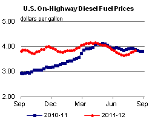
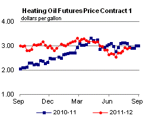

Released: August 1, 2012
Next Release: August 8, 2012
Corn Ethanol Issues Not Expected to Significantly Impact Gasoline Prices in 2012
In recent weeks, drought conditions have lowered the outlook for this year's corn harvest across the Midwest and raised concerns over the higher costs of fuel ethanol and satisfying the blending mandates of the Renewable Fuel Standard (RFS). Ethanol production fell from 920,000 barrels per day (bbl/d) for the week ending June 8, 2012 to 817,000 bbl/d (an annualized rate of about 12.6 billion gallons) for the week ending August 3, 2012. The U.S. Energy Information Administration (EIA), in the August 2012 Short-Term Energy Outlook (STEO) released yesterday, reduced its ethanol production forecast for the second half of 2012 by 70,000 bbl/d to 830,000 bbl/d, below the annual rate of 13.2 billion gallons of renewable fuels that the RFS allows to be met with corn-derived ethanol during 2012.
EIA does not expect the current situation in corn markets to have a significant effect on the pump price of gasoline. Given the year-to-date ethanol supply and the availability of banked renewable identification number (RIN) credits, the current relationship between the prices of ethanol and petroleum-based gasoline components, and the relatively modest share of ethanol in the overall gasoline pool, we expect gasoline prices will continue to be driven by crude oil prices and refining margins. The impact of the forecasted decline in domestic ethanol production should be primarily reflected in reduced ethanol exports.
So far, 2012 has proven to be a challenging year for the ethanol industry. Falling gasoline consumption and a nearly saturated ethanol blending market led to domestic ethanol supplies exceeding U.S. demand during the first half of 2012. The abundance of ethanol in the domestic market has resulted in low ethanol margins for most of 2012, causing the idling of some ethanol plants pending more favorable market conditions and the continued export of excess ethanol volumes. Ethanol crush spreads, which measure the difference between the wholesale prices of ethanol and corn, have been negative for most of 2012, falling from over $0.50 per gallon in late 2011 to almost -$0.40 per gallon in recent weeks (Figure 1). After selling at or above Reformulated Blendstock for Oxygenate Blending (RBOB) gasoline spot prices over much of the second half of 2011, ethanol prices fell below RBOB spot prices in late 2011 as the blender's tax credit neared its expiration date (Figure 2). Through early 2012, ethanol's discount to gasoline grew, reaching almost $1 per gallon in April as ethanol prices remained flat while gasoline prices increased driven by higher crude oil costs.
{kind=link}
{kind=link}
Ethanol is consumed primarily as a gasoline blendstock at 10 percent by volume of finished gasoline, which is often referred to as E10. Every $1-per-gallon change in the price discount or premium of ethanol relative to gasoline results in a potential pass-through of around $0.10 per gallon in retail E10 gasoline.
Beginning in late June 2012, when the extended Midwestern drought led the U.S. Department of Agriculture (USDA) to significantly reduce the corn production estimates in its World Agriculture Supply and Demand Estimates (WASDE) report, ethanol prices rapidly increased after several months of relative stability. Ethanol spot prices rose from around $2.10 per gallon in late June to reach a year-to-date high of $2.70 per gallon on July 25. As discussed above, if that 60-cent increase were all passed through to consumers, it would raise retail E10 gasoline prices by $0.06 per gallon, but there is little evidence this has occurred. Over this same period, the spot price of Brent crude oil increased about $13 per barrel ($0.31 per gallon), while the spot price of Gulf Coast conventional gasoline rose more than $0.20 per gallon and New York Harbor spot RBOB rose about $0.16 per gallon over a similar period. Even after the recent sharp increase in ethanol prices, it was still selling at around a $0.20-per-gallon discount to RBOB in New York Harbor at the end of July. The national average retail gasoline price only increased about $0.15 per gallon during the month of July, indicating no discernible pass-through pressure on retail prices beyond those of crude oil and wholesale gasoline.
Banked RFS RIN credits provide an additional cushion that limits the effect of higher ethanol prices on retail gasoline prices. There are an estimated 2.5 billion gallons of banked RIN credits available for compliance this year due to production beyond the mandated level in previous years. The availability of banked RINs should ameliorate tightness in the market for the remainder of the year in the event physical ethanol volumes fall short of the 2012 RFS mandate.
Gasoline and diesel fuel prices continue to increase
The U.S. average retail price of regular gasoline increased 14 cents this week to $3.65 per gallon, three cents per gallon lower than last year at this time. This is the largest one-week increase in the U.S. average price since March 7, 2011. Prices increased in all regions except the Rocky Mountains, where the price decreased less than a penny to remain at $3.46 per gallon. The Rocky Mountain price has decreased for 16 consecutive weeks. The largest increase came in the Midwest, where the price increased 26 cents to $3.77 per gallon. This is the third largest increase in the Midwest price since EIA began collecting these prices in 1992. The East and Gulf Coast prices were both up 10 cents, to $3.60 per gallon and $3.41 per gallon, respectively. Rounding out the regions, the West Coast price is now $3.76 per gallon, up five cents from last week.
The national average diesel fuel price increased five cents to $3.85 per gallon, five cents per gallon lower than last year at this time. Prices increased in all regions of the Nation, with the largest increase coming in the Rocky Mountain region, where the average price is $3.81 per gallon, an increase of eight cents from last week. The Midwest price increased seven cents to $3.85 per gallon. The Gulf and West Coast price are both up six cents from last week to $3.75 per gallon and $3.96 per gallon, respectively. The smallest increase came on the East Coast, where the price is up three cents to $3.87 per gallon.
Propane inventories show another rise
Last week, total U.S. inventories of propane continued their seasonal growth, adding 0.6 million barrels to end at 68.1 million barrels, 18.5 million barrels (37 percent) higher than a year ago. The majority of new inventories appeared in the Gulf Coast region, which added 0.9 million barrels of new propane stocks. Meanwhile, Midwest regional stocks fell 0.2 million barrels and the East Coast and Rocky Mountain/West Coast regions each dropped by 0.1 million barrels. Propylene non-fuel-use inventories represented 7.3 percent of total propane inventories.
Text from the previous editions of This Week In Petroleum is accessible through a link at the top right-hand corner of this page.
|  | |||||||
| Retail Data | Change From Last | Retail Data | Change From Last | ||||
| 08/06/12 | Week | Year | 08/06/12 | Week | Year | ||
| Gasoline | 3.645 | Diesel Fuel | 3.850 | ||||
 |
|||||||||||||||||||||||||||
|
 | ||||||||||||||||||||||||||
| *Note: Crude Oil Price in Dollars per Barrel. | |||||||||||||||||||||||||||
| Stocks Data | Change From Last | Stocks Data | Change From Last | ||||
| 08/03/12 | Week | Year | 08/03/12 | Week | Year | ||
| Crude Oil | 369.9 | Distillate | 123.5 | ||||
| Gasoline | 206.1 | Propane | 68.056 | ||||